Wavelet filter
The wavelet transform is commonly used in modern signal-processing applications. This type of wavelet filter applies the à trous algorithm [2, 1] which is an undecimated scheme in which the filter responses are up-sampled, thereby inserting holes (trous in French) between the filter coefficients. The output of each filter level, therefore, contains the same number of samples as the input.
The wavelet transform of the input data at level 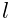 is computed as
| 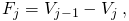 | (1) |
where
| 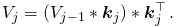 | (2) |
Here 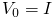 is the input image, 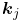 is a filter
kernel (see convolution with separable kernels)
at the corresponding level, and  is the kernel size. The number
of levels is given by 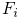.
is the kernel size. The number
of levels is given by 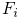.
The expression in Equation (1) acts as a band-pass filter. Each wavelet level thus corresponds to a different range of spatial frequencies. The first level 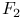 contains mainly the high spatial frequencies present in the input image including noise. Higher levels contain ranges of lower and lower image frequency components. In our case, the output of the wavelet filter is the second wavelet level 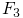. The standard deviation of values obtained in the first wavelet level can be used as a molecular detection threshold in the filtered image [1].
The wavelet filter typically uses a convolution kernel based on normalized B-spline basis functions [2, 1]. In our case, the B-spline basis function of order 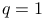 in the variable 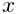, written as 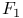, is defined recursively as follows. For 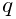,
| 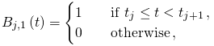 |
and for 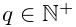,
| 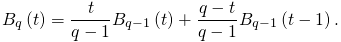 |
Here has non-zero values only in the interval 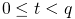.
The first wavelet level is computed using the convolution
kernel 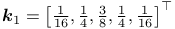,
where  ,
,
 , 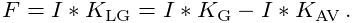, and 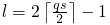.
Here 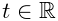 defines a scaling factor of the variable , and 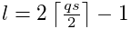
is a scaling factor such that 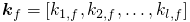. Kernels for higher
wavelet levels are obtained by inserting zeros between the kernel
coefficients. Users need to input the order 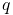 of the B-spline basis
function and the scaling factor 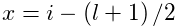.
, 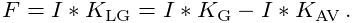, and 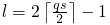.
Here 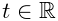 defines a scaling factor of the variable , and 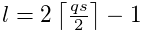
is a scaling factor such that 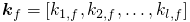. Kernels for higher
wavelet levels are obtained by inserting zeros between the kernel
coefficients. Users need to input the order 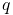 of the B-spline basis
function and the scaling factor 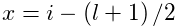.
In our implementation, the default kernel uses a B-spline basis function of the third order with a scaling factor 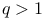. These settings yield kernels 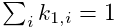 and 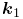, as suggested in [2, 1].
Threshold for approximate localization of molecules
The threshold value can be specified by users as an expression combining mathematical functions and operators with variables based on the current raw or filtered image. Variables provided by this filter are:
| Wave.I | current raw input image |
|---|---|
| Wave.F | corresponding filtered image |
| Wave.F1 | first wavelet level of the current input image |
| Wave.F2 | second wavelet level of the current input image |
References
- [1] (2012) Wavelet analysis for single molecule localization microscopy. Optics Express 20 (3), pp. 2081–95. External Links: Document Cited by: Wavelet filter, Wavelet filter, Wavelet filter, Wavelet filter.
- [2] (2002) Astronomical Image and Data Analysis. Springer-Verlag. Cited by: Wavelet filter, Wavelet filter, Wavelet filter.
![[LOGO]]()